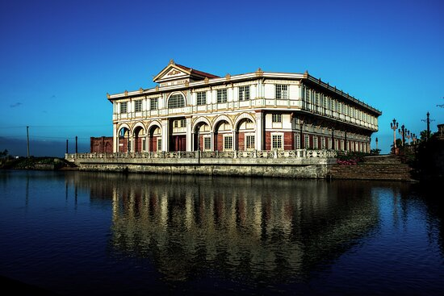
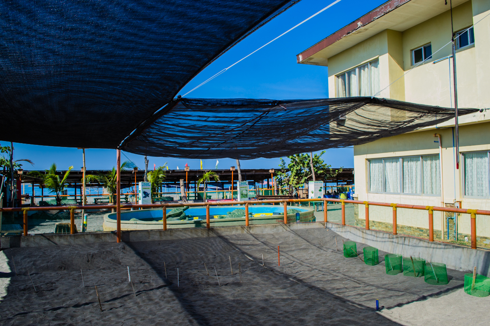

Location & History
Location: Bataan is a peninsula situated in the western part of Luzon, bordered by the South China Sea to the west and Manila Bay to the east. It is conveniently located just a few hours from Manila.
History: Known as the "Cradle of Valor," Bataan played a pivotal role during World War II. It was the last stronghold of Filipino and American forces in 1942, standing today as a testament to courage and resilience.

Known Attractions
Mount Samat Shrine
The Dambana ng Kagitingan honors the heroes of WWII with a massive memorial cross and museum.

Las Casas Filipinas
A sprawling heritage park and resort featuring meticulously restored Spanish-colonial mansions.

Pawikan Center
A community-based sanctuary in Morong dedicated to the protection of endangered sea turtles.
Culture & Traditions
Bataan's culture is a vibrant mix of environmental advocacy and deep historical reverence. The Pawikan Festival celebrates the cycle of life, while local gastronomy like Tinapa (smoked fish) reflects the province's rich coastal resources.